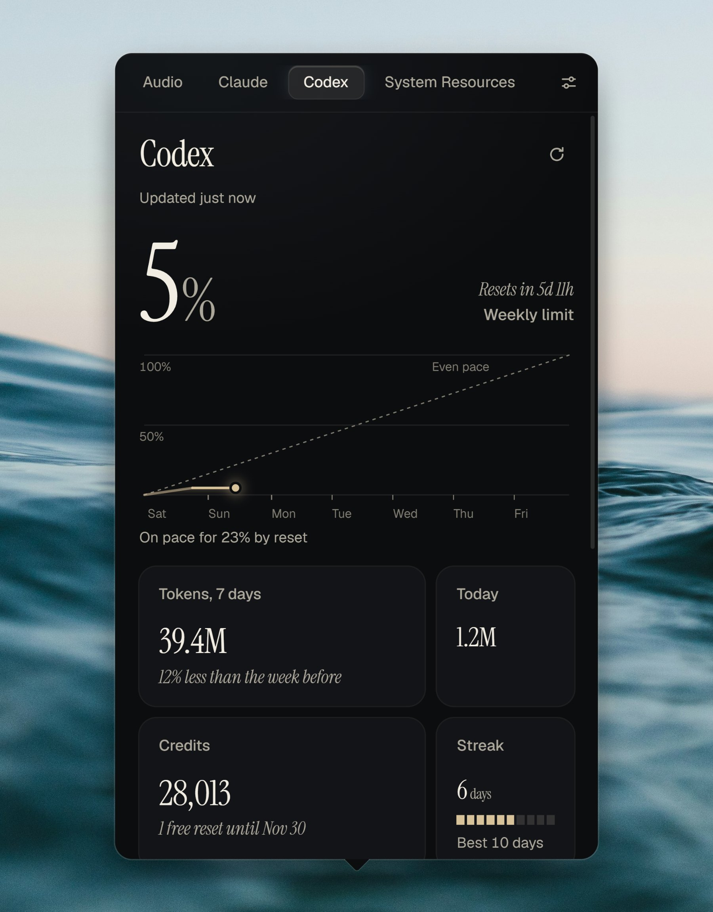

All pulse. No bulk.
- The size of a single photo.
- 4.5 MB
- Lighter than one browser tab.
- 30 MB
- Too quiet for your fans to notice.
- 0.02% CPU
- Open in a blink.
- 340 ms
Up to 21x smaller than other Windows trackers.1
Will this limit last until it resets?
Pulse draws each limit across its whole window, against an even pace. Stay under the line and you have room to spare. Cross it, and Pulse tells you when you'd run out.

Both Claude limits, always in view.
Your 5-hour and weekly limits, when each one resets, and the tokens behind them. Pulse updates them as Claude Code responds, so you see a limit coming before you hit it.

Half a year of work, at a glance.
Every day you used Codex, shaded by how much, with your streak and your records beside it. Point at a day to read it.

Your machine, without opening anything.
CPU, every core, GPU, memory, disks and network, all live. Pick any number to sit on the tray icon itself.

Nothing connects until you say so.
Before Pulse reads anything, it shows you exactly what it will do, and what it never will. It uses each tool's own sign-in, so it never sees your login.

CtrlAltP
Open it from anywhere.
Choose your own shortcut in Settings, then forget Pulse is there until you need it.
Download for WindowsWindows may show a SmartScreen notice because Pulse is a new app. Choose More info, then Run anyway. You can check your download against its SHA-256 checksum. Claude tracking needs Claude Code, and Codex tracking needs Codex signed in with ChatGPT.